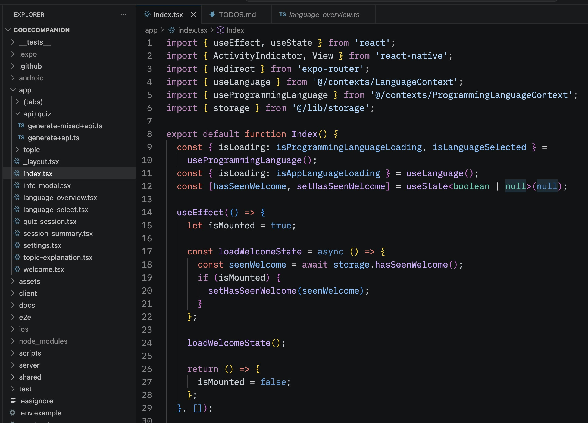
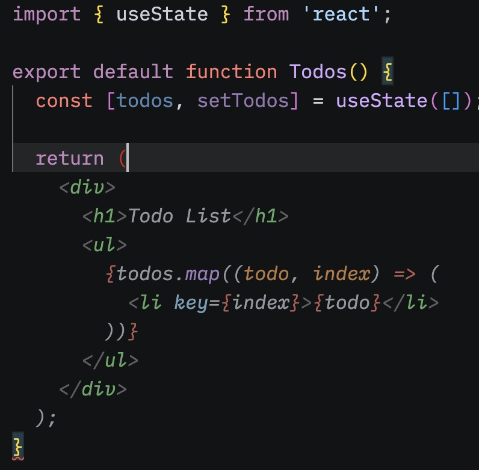
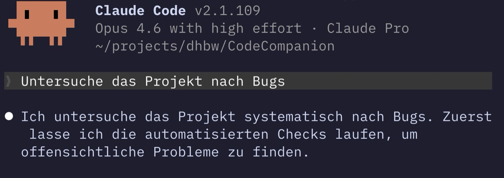

Professor seit 2013
Im Studienzentrum IT-Managemente & Informatik (SZI) der DHBW Lörrach
Erik Behrends
Professor seit 2013
Im Studienzentrum IT-Managemente & Informatik (SZI) der DHBW Lörrach
Softwareentwicklung
In der Lehre und aktiven Projekten: Campus App, Code Companion, …
Wer nutzt täglich irgendein KI-Tool?
Wer hat Erfahrungen mit Claude Code oder Codex?
Fokus
Es geht hier überwiegend um den Einsatz von KI in der Programmierung.
Positive Sichtweise
Entwicklungen in der Softwareentwicklung sind furios und spannend.
Abgrenzung
Themen wie Umwelt, Gesellschaft oder Politik sind wichtig aber werden hier bewusst ausgeblendet.
Programmierung ist Handarbeit
Code wird manuell geschrieben. In modernen IDEs gibt es höchstens Autovervollständigung.
Anspruchsvoll und aufwändig
Kenntnisse in Syntax-Details und Schnittstellen sind nötig, Fortschritt ist inkrementell.
Langsam und teuer
Die direkte Arbeit mit Programmcode war stets ein wesentlicher Kostenfaktor und Engpass.


Produktivitätssteigerungen
KI-Vorschläge als erweiterte Autovervollständigung.
Gleiche Workflows
Abläufe beim Programmieren bleiben gleich, ähnliche Tools folgen (u. a. Cursor).
Programmieren
Prompting im Browser um Code zu generieren, kopieren und in Programmierumgebung einfügen.
Lernbegleiter
Code erklären lassen, Fehler finden und beheben, Alternativen anfragen, Feedback einholen, …
Qualität
Deutlich bessere Ergebnisse allgemein im Chat und bei der Codegenerierung.
Agenten
Ende 2024 gibt es schon Replit Agent eine komplette KI-basierte Programmierumgeben.
Ausblick
2025 wird als „year of the agents“ angekündigt
Agents
Agents und Subagents können in Iterationen selbst Code schreiben, testen und komplexe Tools ausführen.

90% des Codes werden in 3 bis 6 Monaten von KI geschrieben.
Wir haben alle gelacht.
Coding Agents funktionieren
Code wird nicht mehr manuell geschrieben sondern generiert
Offene Aufgabe
Zwei bis drei belastbare Stimmen aus Entwicklerberichten, Interviews oder Presseartikeln würden diese Folie schärfen.
Subagents
Parallele Coding-Agents
Früher
Lochkarten, Assembler, Cobol/Fortran, C/C++, Java/C#, Python/Ruby/JS.
2022
Tab-Completion und KI-Vervollständigung im Editor.
2023
Copy-and-paste-Workflows und Chat als Standardoberfläche.
2025
Agentische CLI-Tools und provokante Prognosen.
Spät 2025
Opus 4.6 und GPT-5.2 machen Agents praktisch relevant.
2026
Agentic Coding wirkt wie eine weitere Stufe über dem Code.
Vibe Coding
"I just see stuff, say stuff, run stuff, and copy paste stuff."
Karpathy, Februar 2025. Gut für Prototypen, „Wegwerf“-Apps und persönliches Ausprobieren.
Agentic Engineering
„Echtes“ Software Engineering für produktive Apps.
1
Softwareentwicklung ist nicht nur Coding.
2
Coding Agents schreiben schneller und oft besser als Menschen.
3
Code wird billiger und es gibt mehr Zeit für die Qualität der Software.
4
Gute Systeme entstehen nicht automatisch, nur weil mehr Code generiert wird.
5
Programmiersprachen, Frameworks und deren Syntax werden abstrahiert.
Wie arbeite ich an CodeCompanion?
Codex und daneben Simulator
Feature entwickeln
Zeigen, dass Codex Tests schreibt und ausführt
Mit Claude Reviewen lassen
Falls Zeit kurz Agents u.a. erwähnen
Code-Reviews
Vollständige manuelle Prüfung ist langsam und unvollständig.
Wirkung
Wenn alles erneut von Hand geprüft werden muss, verschiebt sich der Flaschenhals nur.
Agents finden Fehler, die Menschen übersehen
Anthropics Mythos fand laut Project Glasswing eine 27 Jahre alte Security-Schwachstelle in OpenBSD. Beispiel ansehen.
Unit Tests und E2E-Tests
Static Typing und Linting
Browser Testing via MCP oder Headless
Testpyramide und TDD?
Mein Ansatz
Produzieren und Hinterfragen bewusst auseinanderziehen.
Eigene Werkzeuge
Reviews lassen sich in Agents integrieren oder über eigene Tools ergänzen.
Ökosystem
Spezialtools übernehmen einzelne Rollen wie Review, Suche, Security oder PR-Begleitung.
These
Agenten bauen, testen, deployen und überwachen fast alles selbst.
Bild
Softwarefabriken laufen weitgehend autonom im Hintergrund.
Status heute
Als zugespitztes Zukunftsbild interessant, aber aktuell eher Denkfigur als belastbare Realität.
Vibe
Schnell erzeugen, ausprobieren, verwerfen, neu bauen.
Agents
Dort automatisieren, wo Muster, Tests und Rückkopplung gut funktionieren.
Menschen
API, Architektur, Security und harte Designentscheidungen nicht blind delegieren.
Arbeitsmarkt
Jevons-Paradox, mehr Softwarebedarf und neue Rollen sprechen eher für Verschiebung als für Stillstand.
Breite Nutzung
ChatGPT, Gemini oder AI Studio senken die Einstiegshürde massiv.
Skill Atrophy
Systeme wie Code Companion können helfen, aktives Lernen und bewusstes Verstehen zu erhalten.
Modelle
Neben Codex und Claude spielen Gemini, Gemma, Modelle aus China und Mistral aus Europa eine Rolle.
Reserve
These
Weniger Tipparbeit, mehr Verantwortung für System, Review und Produktverständnis.
Spannung
Wenn Erstellen billiger wird, steigt oft die Nachfrage nach neuen Lösungen.
TODO
Sinnvoll wären zwei bis drei aktuelle Ausschreibungen, die Architektur-, Integrations- oder KI-Kompetenz betonen.
Übertragen auf KI-Coding
Mehr Menschen und Teams können mehr Software bauen als zuvor.
Folge
Das kann den Bedarf an Engineering insgesamt erhöhen statt nur zu reduzieren.